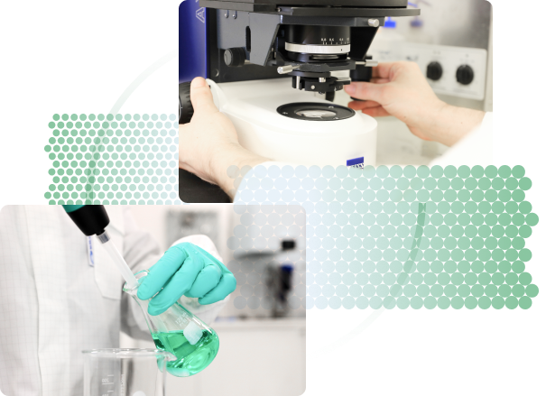

Our Mission
Conpart's mission is to provide sustainable solutions with high-quality products and services for electronics and solar industries based on our unique particle technology. We create innovation value and opportunity for our customers, employees, investors, and global partners.
What we do
We utilize our unique particle technology to develop high performance interconnect
materials for a wide range of
applications including electronics, microsystems, solar energy, and more. Every product
is designed to meet the
requirements of our customers, environmental aspects, and social governance. We live by
high quality standards and
believe consistent focus on product quality, continuous improvements and customer
satisfaction are the keys to success.
We develop products with environmental aspects in mind, both in terms of production
processes and target applications,
and we aim for becoming a leading material supplier for a greener tomorrow.

Management team

Sturla Berg
Chief Executive Officer, CEO
has extensive industrial experience working with finance and operational management. He is
also the CFO of Conpart’s
parent company, K.A. Rasmussen.
Tom Ove Grønlund
Chief Operation Officer, COO
has more than 40 years of industrial experience working with particle technology, product
development and manufacturing.
He is the founder of Conpart.
Ivy H. Liu
MSc, PMP
Chief Commercial Officer, CCO
has over 25 years of business establishment and Project Management in broad areas of Product
Development, Business &
Technology Cooperation and Market Introduction to the international market.
Dr. Helge Kristiansen
VP Applications & Technology
has more than 30 years of R&D experience in electronic packaging. He has published more
than 100 papers internationally
in the field of conductive adhesives and thermal management for electronics applications. He
is co-inventor of Conpart’s
patent applications.
Dr. Keith Redford
VP R&D
has 40 years of R&D experience in polymer structure property relationships, synthesis,
characterization, surface
modification and adhesion. He is the co-inventor of 27 patent families spanning materials
and medical devices. He is the
author and co-inventor of Conpart’s patent applications.
Susanne Helland
MSc
Chief Product Officer, CPO
is responsible for Conpart’s product development and product portfolio. With a wide
knowledge of photovoltaics,
electronics, and conductive adhesives, she applies customer’s requirements to the design and
development of Conpart’s
particle products.